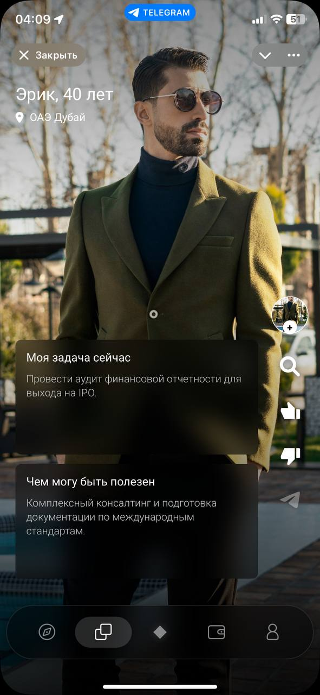

03 — КАК РАБОТАЕТ STATUS
Делает продукт понятным.
01
Расскажите о себе
Кто вы, что можете и кого ищете.
02
Найдите нужного человека
AI-помощник помогает найти профессиональную связь под ваш запрос.
03
Получите мэтч
STATUS предлагает знакомство и соединяет вас при взаимном интересе.
04
Общайтесь с нужными людьми
Обсуждайте задачи, обменивайтесь опытом и создавайте новые возможности.


